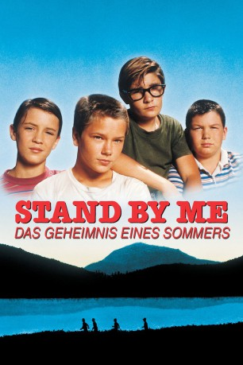
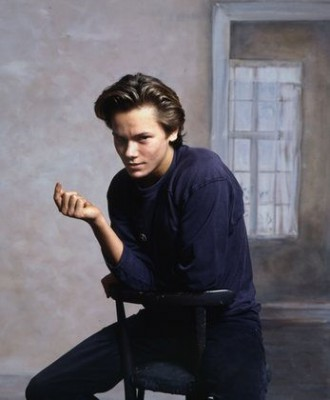
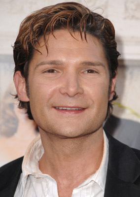
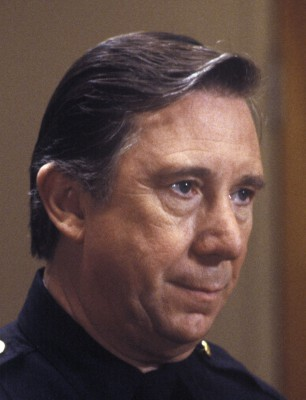
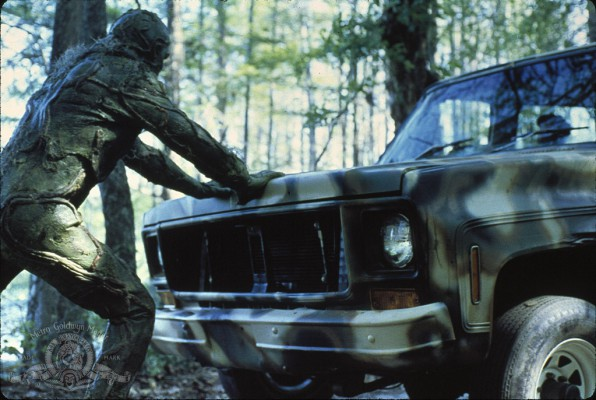

#172 Stand By Me - Das Geheimnis eines Sommers
Alternativ: Stand by Me
Auszeichnungen: für 1 Oscars nominiert
 
 IMDB-Wertung: 8.1 / 10
IMDB-Wertung: 8.1 / 10  IMDB-TOP-Platzierung: 189
IMDB-TOP-Platzierung: 189  Metascore: 75
Metascore: 75 
USA, Ende der 50er Jahre: Vern, Gordie, Chris, und Teddy wollen endlich einmal heraus aus ihrem langweiligen Heimatkaff Castle Rock. Da bietet es sich doch an, daß etwa einen Tagesmarsch entfernt ein kleiner Junge von einem Zug überfahren worden sein soll. Sie wollen diejenigen sein, die die Leiche des Jungen finden, und so zu kleinen Helden werden. Also machen sie sich auf den Weg, auf dem die vier Zwölfjährigen einige Abenteuer zu bestehen haben werden.
Jahr: 1986
Dauer: 89 Minuten
FSK: 6
Land: USA Studio: Columbia PicturesTonspuren: DTS - ,
Untertitel:
Auflösung: 1080p (1920×1040) Größe: 10035 MB
Genre: Drama, Abenteuer
Regisseur:  Rob Reiner
Rob Reiner
Drehbuch: Stephen King, Raynold Gideon, Bruce A. Evans
Soundtrack: Jack Nitzsche
Darsteller:
 Wil Wheaton als Gordie Lachance
Wil Wheaton als Gordie Lachance-  River Phoenix als Chris Chambers
-  Corey Feldman als Teddy Duchamp
 Jerry O'Connell als Vern Tessio
Jerry O'Connell als Vern Tessio Kiefer Sutherland als Ace Merrill
Kiefer Sutherland als Ace Merrill- Casey Siemaszko als Billy Tessio
- Gary Riley als Charlie Hogan
- Bradley Gregg als Eyeball Chambers
- Jason Oliver als Vince Desjardins
 Marshall Bell als Mr. Lachance
Marshall Bell als Mr. Lachance- Frances Lee McCain als Mrs. Lachance
-  Bruce Kirby als Mr. Quidacioluo
 Richard Dreyfuss als The Writer
Richard Dreyfuss als The Writer John Cusack als Denny Lachance
John Cusack als Denny Lachance- Matt Williams als Bob Cormier
-  Dick Durock als Bill Travis
- Korey Scott Pollard als Moke
- Kent W. Luttrell als Ray Brower
- William Bronder als Milo Pressman
- Scott Beach als Mayor Grundy
- Madeleine Swift als Waitress
- Popeye als Chopper
- Geanette Bobst als Mayor's Wife
- Art Burke als Principal Wiggins
- Andy Lindberg als Lardass Hogan
- O.B. Babbs als Lardass Heckler #1
- Charlie Owens als Lardass Heckler #2
- Kenneth Hodges als Donelley Twin
- John Hodges als Donelley Twin
- Susan Thorpe als Fat Lady
- Rick Elliott als Jack Mudgett
- Chance Quinn als Gordon's Son
- Jason Naylor als His Friend
Datei: X:\Person\Stephen King\Stand By Me - Das Geheimnis eines Sommers (1986, FSK6, 1920x1040).mkv seit 14.02.2015
Festplatte: HD Collection-7+mehr(A-Z)+Person
 Es gibt insgesamt 44 Filme in der Gruppe 'Person\Stephen King'
Es gibt insgesamt 44 Filme in der Gruppe 'Person\Stephen King'